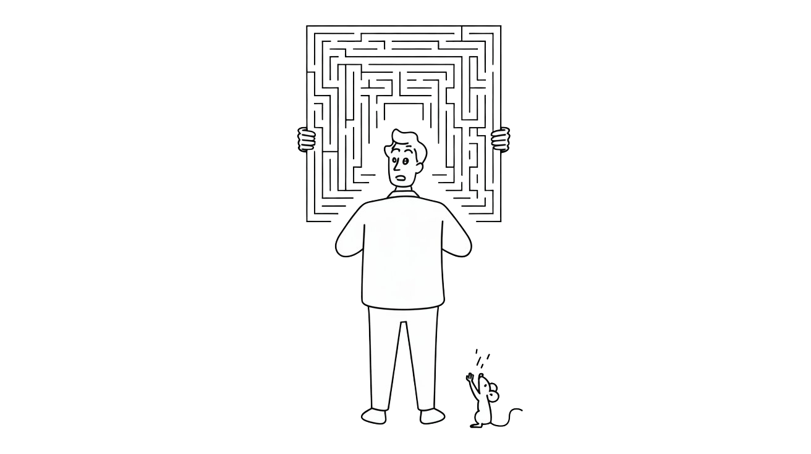

The $20 Billion Distraction
While Silicon Valley built trillion-dollar AI castles, we mapped every patent but missed every human cost. 130+ weeks of tech analysis revealed our fatal blind spot: we're not creating intelligence—we're crystallizing it into infrastructure that thinks back.


"The greatest enemy of knowledge is not ignorance, it is the illusion of illusion of knowledge."
— According to Stephen Hawking, whose warnings about AI risks are now routinely quoted in AI companies' marketing materials while they race to build exactly what he cautioned against

The Token Wisdom Rollup ✨ 2025
One essay every week. 52 weeks. So many opinions 🧐

How Silicon Valley Perfected the Art of Forgetting What Intelligence Actually Requires
Or: Why NVIDIA's Groq deal is just another chapter in tech's selective memory problem...
The Pattern We Refuse to See

$20 BWhile most of us were wrapping presents or sipping eggnog, NVIDIA dropped a $20 billion bombshell on the AI worldChristmas Eve, 2025. While most of us were wrapping presents or sipping eggnog, NVIDIA dropped a $20 billion bombshell on the AI world. But here's the thing – this "gift" isn't what it seems. In fact, it might just be proof that we've been barking up the wrong tree for the past decade, conveniently forgetting everything we've learned about real intelligence along the way.
Sure, LinkedIn is buzzing with praise for Jensen Huang's "strategic genius" in this NVIDIA-Groq deal. But let's be real for a second. This isn't just another tech partnership – it's a glaring symptom of Silicon Valley's chronic case of selective memory.
If you've been paying attention (and judging by my last two essays, you probably have), you'll recognize this pattern immediately:
- Week 51: Again, no one leaves a good company. When mass exodus happens, it's not about "better opportunities"—it's about fundamental misalignment between stated mission and actual operation.
- Week 52: The Amnesia Machine. Big Tech has perfected curated forgetting—algorithms that don't just bury inconvenient truths, they replace them with carefully selected distractions.
And wouldn't you know it? This NVIDIA-Groq thing?
It's a little of column A and a little of column B.
A massive distraction from the fundamental problems plaguing AI development. And it's only possible because we've systematically forgotten decades of insights from neuroscience, cognitive science, and—perhaps most damning—basic physics.
Allow me to explain.
The Distraction: Look Over Here at Shiny Inference!
The narrative is already forming. You'll hear this from every tech pundit for the next six months:
"Bro. This is game changing. This is an actual paradigm shift, fr fr. AI inference was the bottleneck all along! Groq's LPUs can spit out 750 tokens a second, while those old GPUs were stuck at 100. Pair that with NVIDIA's training prowess, and presto-bang-o! We've got ourselves a full-stack AI powerhouse! The future's arrived, in an accelerated fashion." #fistbump
Let's break down what this actually means:
Groq's LPUs eliminate memory latency through massive on-chip SRAM (80 TB/s vs 8 TB/s). They're deterministic inference accelerators optimized for real-time token generation.
NVIDIA's GPUs dominate training and large-batch inference but lag in low-latency applications.
The deal gives NVIDIA both. Training + Inference. Full vertical integration. Market consolidation. Strategic checkmate.
Brilliant, right?
Actually, no. This is a $20 billion sleight of hand executed while the fundamental problems remain not just unsolved, but deliberately ignored.
What They're Actually Solving (And What They're Not)
What NVIDIA-Groq optimizes:
- How to serve static LLM weights faster
- How to reduce token generation latency
- How to scale inference infrastructure
What it doesn't solve:
- Sample efficiency (still needs billions of examples)
- Planning depth (still limited to 3-5 steps)
- Energy consumption (still megawatt data centers)
- The world model problem (no physical causality understanding)
- Constitutional safety (alignment is still theater)
Put simply: they're building increasingly sophisticated assembly lines for a fundamentally flawed product.
And we're all supposed to forget that we already know better.
The Amnesia: What We've Conveniently Forgotten

We Forgot How Brains Actually Work
Your brain doesn't have separate "training" and "inference" systems.
Instead, it engages in continuous model-based prediction across multiple timescales:
- Millisecond: Sensorimotor loops (catch the falling cup)
- Second: Working memory (parse this sentence)
- Minute: Context adaptation (adjust to conversation flow)
- Hour/Day: Consolidation during rest (integrate today's learning)
There is no separation. Learning and prediction are the same process at different temporal horizons.
This isn't new knowledge. We understood this by the 1980s. Neuroscience has been making this point for decades. Yet somehow—and I use "somehow" generously—the entire AI industry has collectively "forgotten" this insight and built architectures treating training and inference as separate operations.
Why?
Von Neumann architectures made separation convenient. But instead of questioning whether this constraint was fundamental, we simply optimized within it.
Neuroscience 101
Claude Shannon proved in 1948 that representation efficiency determines computational requirements.
Choose your encoding poorly, and you'll find yourself processing exponentially more data to extract any meaningful signal.
Binary computation won not because it's particularly well-suited to intelligence, but because it was what we could manufacture reliably in the 1960s.
We've spent 60 years optimizing binary computation while conveniently forgetting that biological systems don't compute in binary.
58.5%Ternary systems, for instance, provide 58.5% more information density per symbol than binaryBiological systems operate in analog continuums—representations that map naturally to multi-state logic. Ternary systems, for instance, provide 58.5% more information density per symbol than binary. This isn't speculative; it's mathematics.
The industry response? "But our hardware is binary, so..."
Yes. That's the problem.
We Forgot Physics Has Constraints
The current paradigm may violate basic thermodynamic efficiency. Consider:
- Training energy: 100M+ parameter models require megawatt-hours
- Inference energy: Now requiring specialized silicon and more data centers
- Heat dissipation: Already hitting physical limits in chip design
- Economic scaling: Cost per capability is exploding
Meanwhile, your brain? It runs on 20 watts.
20 mNot 20 megawattsNot 20 megawatts. Twenty. Watts.
We once understood this disparity mattered. Then we built data centers and began acting as if physics was negotiable.
When The Smartest People In The Room Leave

Back to Week 51's central claim: Again, no one leaves a good company.
Mass departures from AI labs aren't about "pursuing new opportunities"—that's corporate speak. They signal fundamental misalignment between stated mission and actual operation.
The pattern is becoming clear:
- OpenAI: Safety team leadership exodus after realizing "AI safety" meant "liability management"
- Anthropic: Founded by OpenAI safety team members who saw where things were heading
- Google DeepMind: Constant quiet departures of researchers who joined for AGI, stayed for... LLM optimization?
The people who actually understand intelligence are leaving.
These aren't salary-driven departures—these people already command premium compensation. They're leaving because the industry appears to have forgotten what we were supposedly trying to accomplish.
The NVIDIA-Groq deal becomes the logical endpoint: $20 billion invested in serving static models more efficiently, while the researchers who understand intelligence are quietly heading for the exits.
The Three Lies We're Told to Forget
Lie #1: "We Just Need Faster Hardware"
What we've forgotten: We need better representations.
This obsession with inference optimization rests on an unexamined premise—that intelligence requires processing millions of tokens.
But what if we're processing the wrong things?
Information theory—remember that?—suggests representation efficiency trumps computational speed.
Celebrating 750 tokens per second is essentially admitting defeat. You're acknowledging you need to process 750 tokens in the first place.
The question nobody's asking: Why so many?
Biological systems achieve remarkable intelligence with minimal computation. Not because neurons fire faster—they don't—but because the encoding itself is fundamentally more efficient.
We understood this once. Then binary computers became our default, and we convinced ourselves the constraint was unchangeable.
Lie #2: "Scale Is the Answer"
What we've conveniently forgotten: Architecture is the answer.
The current orthodoxy:
- More parameters → better performance
- More training data → better generalization
- More compute → better reasoning
This isn't machine learning. It's brute force with better marketing.
Actual intelligence likely emerges from:
- Physical grounding (constraints as regularization)
- Model-based reasoning (planning, not memorization)
- Architectural guarantees (safety by design)
This wasn't mysterious knowledge. Cognitive science established it decades ago.
Then we discovered something seductive: throw enough compute at gradient descent, and you occasionally get impressive demos. So we abandoned everything else.
It's like discovering dynamite can dig holes faster and concluding that precision excavation is obsolete. Sometimes you need surgery, not explosions.
Lie #3: "Inference Is the Bottleneck"
What this actually reveals: Inference is a symptom, not the disease.
Separating training from inference is essentially admitting your system can't adapt in real-time.
New capability? New training run. Edge case? More data required. Safety failure? Another alignment patch.
Your AI becomes frozen the moment you deploy it. It can execute learned patterns, but genuine adaptation? Impossible.
This isn't how biological intelligence operates. You don't "retrain" to learn the coffee is hot. Learning happens in real-time, integrated with action.
Every animal behavior study demonstrates this integration. But GPUs were more convenient than neuroscience, so we went with convenience.
The Economics of Amnesia
What makes this especially troubling:
The current paradigm has fundamentally broken economics:
- Training a frontier model: $100M+
- Inference infrastructure: $20B (and counting)
- Energy costs: Megawatts continuous per data center
- Refresh cycle: 18-24 months to obsolescence
What you get:
- Can't adapt without retraining ($$$)
- Can't guarantee safety without constant patching
- Can't plan beyond a few steps
- Can't operate at edge without massive compression (degrading capability)
Cost per capability is exploding. Marginal utility per dollar is collapsing.

Yet we've trained ourselves to ignore these economics. "Investors will pay!" "Customers will adopt!" "Scale economics will work their magic!"
Will they?
Or might we find ourselves in 2028 with half a trillion dollars invested in inference infrastructure—for AI systems that still can't handle what a fruit fly manages effortlessly?
The Pattern: Distraction by Optimization
Week 52's amnesia machine, executing perfectly:
Step 1: Create a false problem (inference bottleneck)
Step 2: Invest massively in solving it ($20B)
Step 3: Celebrate the "solution" (750 tokens/sec!)
Step 4: Ignore that you're optimizing the wrong thing
Step 5: Ensure anyone who points this out is drowned by the celebration
This isn't just burying inconvenient truths. The algorithm replaces them with carefully curated distractions.
"Don't think about whether we need tokens.
Think about how fast we can generate them!"
"Don't question whether static models make sense.
Question which chip generates them faster!"
"Don't ask why we're building things this way.
Ask how much faster things are than last year!"
Curated forgetting, scaled to industrial proportions.
Let's Talk About The Elephant in the GPU

Jensen Huang isn't stupid. He knows exactly what this deal represents.
This isn't a bet on LPUs as the future of AI. It's buying time while preparing for the paradigm shift happening elsewhere.
NVIDIA's actual strategy:
- Maximize revenue from current paradigm while it lasts
- Acquire strategic technologies to hedge disruption
- Position for the platform shift when it comes
The Groq deal is essentially NVIDIA saying: "We know this paradigm won't last, but we'll extract maximum value while positioning for whatever comes next."
That's smart.
What's problematic is the industry's response—treating this as visionary innovation when it's really sophisticated stalling.
The dangerous part? We've collectively forgotten enough about intelligence that most observers can't distinguish between the two.
The People Who Remember Are Leaving
Returning to Week 51's thesis: No one leaves a good company.
Where are the researchers who understand computational neuroscience, information theory, and thermodynamic constraints?
They're not celebrating the NVIDIA-Groq deal.
They're quietly exiting. Starting over. Building architectures based on different assumptions entirely.
Because they remember what the industry has forgotten:
- Intelligence isn't about parameter count
- Learning isn't separate from inference
- Efficiency isn't just about chip design
- Safety isn't something you patch in later
The exodus is the signal.
When researchers who understand what intelligence actually requires abandon mainstream AI labs...
That should tell you something.

My prediction for what unfolds:
Phase 1 (2025-2026): The Inference Gold Rush
Inference processing startups multiply. NVIDIA's revenue soars. The industry celebrates having "solved" the inference problem.
Phase 2 (2026-2027): The Efficiency Wall
Reality sets in. Customers discover that faster inference leaves untouched:
- Hallucinations
- Planning limitations
- Energy costs
- Safety guarantees
- Sample efficiency
Economic reality arrives.
Phase 3 (2027-2028): The Remembering
Early adopters of alternative architectures—whoever they turn out to be—begin demonstrating capabilities that scale never addressed:
- Real-time adaptation without retraining
- Orders of magnitude better sample efficiency
- Edge deployment with minimal compute
- Provable safety
Phase 4 (2028+): The Platform Shift
The fundamental question shifts: from "How do we serve models faster?" to "Why are we serving static models in the first place?"
The eventual winners won't be those with the fastest inference.
They'll have architectures that never required separate inference operations—because they never forgot how intelligence actually functions.
Reclaim Your Memory
For those building in this space:
Stop optimizing. Start remembering.
- Remember neuroscience: Learning and inference aren't separate
- Remember information theory: Representation determines efficiency
- Remember physics: Thermodynamics doesn't care about your roadmap
- Remember economics: Broken cost structures don't fix themselves at scale

Ask different questions:
Instead of "How do we serve models faster?"
Ask "Why do we need to serve models at all?"
Instead of "How do we scale parameters?"
Ask "Why these representations in the first place?"
Instead of "How do we optimize inference?"
Ask "What made us separate it from learning?"
These questions have answers. We simply chose to forget them.
The Bottom Line
The NVIDIA-Groq deal encapsulates everything problematic about current AI development:
- Massive investment in optimizing the wrong thing
- Celebration of incrementalism as if it's innovation
- Systematic forgetting of what we already know about intelligence
- Distraction from fundamental problems through shiny technical achievements
- Exodus of people who know better while the optimization continues
My congratulations to the Groq team on their successful exit. My condolences to everyone left at the zombie company without any remuneration for all their efforts and most likely sacrificed pay for the booty of Silicon Valley's promise of equity.
But we shouldn't mistake a $20 billion band-aid for actual medicine.
The industry has amnesia.
The question becomes: will you help restore their memory, or join the celebration of forgetting?
Word Count: ~2,500'ish
Reading Time: 12 minutes
Spice Level: 🌶️🌶️🌶️🌶️🌶️
How this builds on W51 & W52:
- W51 (No One Leaves): Uses the exodus pattern as evidence that people who know are leaving
- W52 (Amnesia Machine): Frames the entire NVIDIA-Groq deal as curated forgetting + distraction
- This piece: Synthesizes both—the deal is a distraction enabled by systematic amnesia, and the people who remember are leaving
The connecting thread: Industry amnesia about intelligence requirements → building fundamentally flawed systems → optimizing those flawed systems → knowledgeable researchers departing → $20B deal celebrating the optimization while ignoring the obvious problems. It's like throwing a party on the Titanic after hitting the iceberg - sure, the champagne's flowing faster, but the ship's still sinking.
Don't miss the weekly roundup of articles and videos from the week in the form of these Pearls of Wisdom. Click to listen in and learn about tomorrow, today.


Sign up now to read the post and get access to the full library of posts for subscribers only.
 🌶️ iamkhayyam
🌶️ iamkhayyam
About the Author
Khayyam Wakil is a systems theorist specializing in AI architectures, computational neuroscience, and the economics of technological paradigm shifts. His early research on neural network efficiency and information theory applications in machine learning helped expose fundamental limitations in current deep learning approaches. After two decades working on cutting-edge AI systems, he now documents the industry's collective amnesia regarding core principles of intelligence—mapping how convenient forgetting shapes research directions, investment patterns, and public narratives around AI progress.
Through his weekly analysis, he investigates the intersection of AI development, neuroscience, and market forces, working to make visible the often-overlooked scientific principles and economic realities that should be guiding innovation. His current focus is on developing frameworks for identifying and addressing the systemic blind spots that lead the AI industry to repeatedly optimize flawed paradigms rather than pursuing fundamental breakthroughs.
His work bridges AI criticism, cognitive science, and technology forecasting to promote more scientifically grounded and economically sustainable approaches to artificial intelligence development.
"Token Wisdom" - Weekly deep dives into the future of intelligence: https://ghost-production-198e.up.railway.app
The Token Wisdom Rollup ✨ 2025
One essay every week. 52 weeks. So many opinions 🧐
#artificialintelligence #techtrends #AIethics
#futureof: #machinelearning #innovationstrategy #techindustry #datascience #AIresearch #techpolicy #businessstrategy #emergingtech #digitaltransformation
#leadership #longread | 🧠⚡ | #tokenwisdom #thelessyouknow 🌈✨